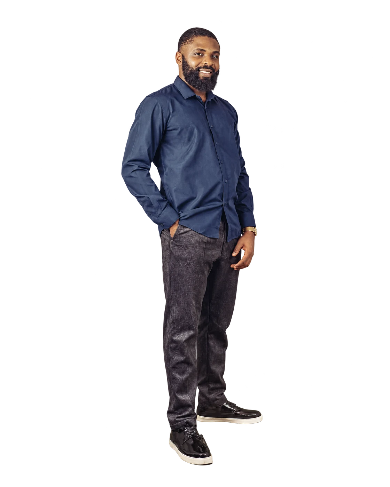

Hardware
Troubleshooting
Diagnosing the physical layer quickly, clearly, and without unnecessary disruption.
↗Lagos, Nigeria available for thoughtful work
I make the system feel simple — combining dependable IT infrastructure with expressive web design that helps good work move forward.

The person behind the system
I’m an IT Support Specialist and WordPress Web Developer based in Lagos. After earning a BEng in Computer Engineering from the University of Benin in 2014, I started in the world of support — learning how to keep people, devices, and operations moving.
Over time, that foundation grew into web design and development. Today, I bring both sides together: infrastructure that works quietly in the background and digital experiences that feel deliberate on the surface.
Start a conversation ↗Good technology disappears into a better experience.
TRUSTED ACROSS TEAMS
What I do
A flexible technical practice for people who need their tools to stay reliable — and their ideas to land with impact.
Diagnosing the physical layer quickly, clearly, and without unnecessary disruption.
↗WordPress sites that feel distinctive, load well, and give teams room to grow.
↗Visual systems and digital assets that make communication easier to recognize.
↗Practical network support that keeps the right people connected to the right things.
↗Security-minded habits, systems, and guidance for a more resilient workplace.
↗Supporting the collaboration layer, from users and access to everyday workflow.
↗Credentials
The work keeps changing. Staying useful means staying open — learning across support, security, cloud, and the tools that shape modern teams.
CLICK SUPPLIED BADGES TO VERIFY ↗
Selected work
A few places where support, design, and a little persistence made the difference.
In their words
Abdulmalik had a great ability to adapt to new challenges and different areas of work. Quick to learn new skills and communicated well amongst the team. It was a pleasure to work with you.
Abdulmalik was an invaluable asset to our IT team. His deep technical knowledge and ability to troubleshoot complex issues swiftly were exceptional. His proactive approach to problem-solving prevented numerous potential disruptions to our operations.
Open channel
Have a system that needs steadying, a site that needs more character, or a problem that needs a calm second pair of eyes? I’d like to hear about it.
EMAIL / malik_afegbua@yahoo.com
DIRECT CONTACT
This link opens your email app so you can send a message directly. No information is submitted to this site.
Email Abdulmalik ↗